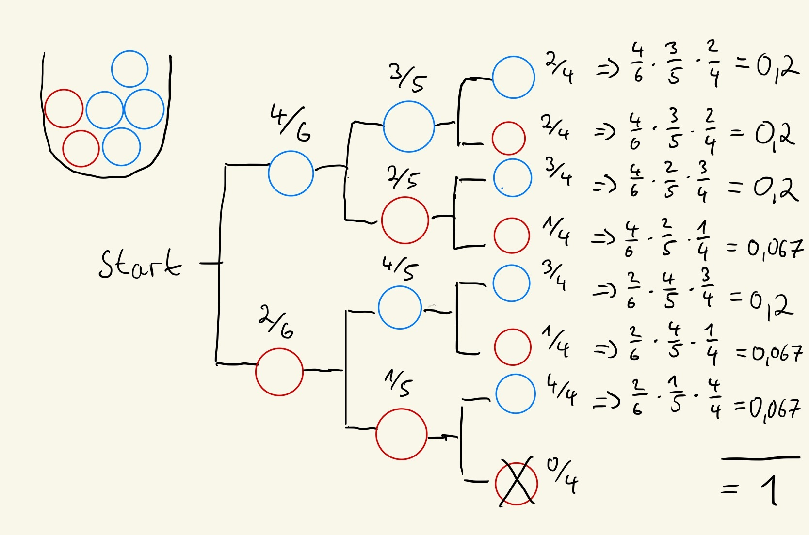

Hypergeometrische Verteilung¶
1. Was ist das für eine Verteilung und wozu dient sie?¶
- Ähnelt der Binomialverteilung, jedoch mit Stichprobenziehungen OHNE Zurücklegen
- Wird verwendet, wenn die Wahrscheinlichkeit für einen Treffer oder Nicht-Treffer von der vorherigen Ziehung abhängt, da die Gesamtpopulation endlich ist und sich mit jeder Ziehung reduziert
2. Herleitung anhand eines Beispiels¶
Beispiel
Gegeben:¶
Insgesamt 6 Kugeln in der Urne.
- Es gibt 2 rote Kugeln.
- Es gibt 4 blaue Kugeln.
Aufgabe:¶
Es werden 3 Kugeln ohne Zurücklegen gezogen. Dabei soll genau 1 rote Kugel gezogen werden. Wie groß ist die Wahrscheinlichkeit?

Ansatz¶
Formel
Berechnung:¶
1. Anzahl aller Kombinationen¶
Erinnere daran, wie du die Anzahl der Kombinationen berechnest, aus k Objekte aus einer Menge von n Objekten auswählen kannst. (ohne Zurücklegen, ohne Beachtung der Reihenfolge)
\(\rightarrow\) Formel des Binomialkoeffizienten: (siehe F.1.2.8, Seite 107 im Buch)
Daraus ergeben sich insgesamt
Möglichkeiten, 3 Kugeln zu ziehen.
2. Anzahl aller zutreffenden Kombinationen¶
Nun zeigen wir alle möglichen Kombinationen der 3 gezogenen Kugeln mit genau 1 roter Kugel.
Tabellarisch:¶
| Kombinations-Nr. | Rote Kugeln (1 von 2) | Blaue Kugeln (2 von 4) |
|---|---|---|
| 1 | {R1} | {B1, B2} |
| 2 | {R1} | {B1, B3} |
| 3 | {R1} | {B1, B4} |
| 4 | {R1} | {B2, B3} |
| 5 | {R1} | {B2, B4} |
| 6 | {R1} | {B3, B4} |
| 7 | {R2} | {B1, B2} |
| 8 | {R2} | {B1, B3} |
| 9 | {R2} | {B1, B4} |
| 10 | {R2} | {B2, B3} |
| 11 | {R2} | {B2, B4} |
| 12 | {R2} | {B3, B4} |
Anzahl der zutreffenden Kombinationen: 12
Oder Anzahl der zutreffenden Kombinationen rechnerisch dargestellt:¶
1. Es gibt 2 Kombinationen für die 1 rote Kugel (R1 oder R2):¶
2. Es gibt 6 Kombinationen für die 2 blauen Kugeln (B1, B2, B3, B4):¶
Diese Anzahl entspricht der Berechnung:
3. Wahrscheinlich berechnen:¶
Oder allgemeiner ausgedrückt:
mit
- X: Die Zufallsvariable für gezogene rote Kugeln
- N = 6: Insgesamt 6 Kugeln in der Urne.
- M= 2: Es gibt 2 rote Kugeln.
- N - M = 4: Es gibt 4 blaue Kugeln.
- n = 3: Es werden 3 Kugeln ohne Zurücklegen gezogen.
- x = 1: Es sollen genau 1 rote Kugel gezogen werden.
Formeln der hypergeometrischen Verteilung
Wahrscheinlichkeitsfunktion:
1 2 3 4 5 6 7 8 9 10 11 12 13 14 15 16 17 | |
Zusammengefasst für das Beispiel
Anzahl der Möglichkeiten, 1 rote Kugel zu ziehen:
Wähle genau 1 rote Kugel aus den M = 2 roten Kugeln:
Anzahl der Möglichkeiten, die restlichen 2 blauen Kugeln zu ziehen:
Wähle 2 blaue Kugeln aus den N - M = 4 blauen Kugeln:
Gesamtanzahl der möglichen Ziehungen von 3 Kugeln aus 6:
Ziehe 3 Kugeln aus den N = 6 Kugeln:
Setze die Werte in die Formel ein:
Aufgabe
Was ist die Wahrscheinlichkeit für \(P(X = 3)\)?
\(x\) kann dabei natürlich höchstens so groß sein wie der kleinere der beiden Werte \(\min(n, M)\).

Verteilungsfunktion

Formel
Für die hypergeometrisch verteilte Zufallsvariable \(X_h\) ist der Erwartungswert:
Formel
Für die hypergeometrisch verteilte Zufallsvariable \(X_h\) ist der Erwartungswert:
Fragen¶
Freitext Frage 1
Wie unterscheidet sich die hypergeometrische Verteilung von der Binomialverteilung?
Lösung
Hypergeometrische Verteilung: Ziehen ohne Zurücklegen, die Wahrscheinlichkeiten ändern sich nach jeder Ziehung.
Binomialverteilung: Ziehen mit Zurücklegen, die Wahrscheinlichkeiten bleiben konstant.
Freitext Frage 2
Was bedeuten die Parameter \(N\), \(M\), \(n\) und \(x\) in der hypergeometrischen Verteilung \(f_h(x \mid N; M; n)\)?
Lösung
\(N\): Gesamtanzahl der Elemente in der Grundgesamtheit.
\(M\): Anzahl der Erfolgsfälle in der Grundgesamtheit.
\(n\): Anzahl der gezogenen Elemente (Stichprobengröße).
\(x\): Anzahl der Erfolgsfälle in der Stichprobe.
Freitext Frage 3
In welchen realen Szenarien findet die hypergeometrische Verteilung Anwendung?
Lösung
Ziehen von Karten ohne Zurücklegen.
Qualitätskontrolle, bei der Bauteile auf Fehler untersucht werden.
Auswahl von Teams oder Gruppen mit bestimmten Merkmalen (z. B. Männer/Frauen).
Gewinnchancen bei Losen oder Tombolas.